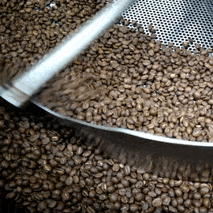

LÊMEM KOFFIE
O ELEGANTE AROMA DO CAFÉ PARA TODOS OS MOMENTOS.

Descrição da vaga
Nós da Lêmen Koffie estamos em busca de pessoas comprometidas em entregar amor em forma de café, dispostas a seguir nossa mais importante diretriz que é entregar nosso produto com a melhor qualidade e com todo amor que essa marca pode proporcionar.Estamos a procura de um talento para compor nosso setor de torrefação. Buscamos um profissional que esteja alinhado com nossa conduta em respeito ao meio ambiente, e que ele seja movido a trazer o melhor sabor do café para os nossos clientes.

Responsabilidades
- Operação do Torrador: Realizar a torra do café, ajustando parâmetros como temperatura, tempo e fluxo de ar para garantir a consistência e qualidade do produto final.
- Controle de Qualidade: Avaliar constantemente o produto torrado, identificando nuances de sabor, aroma e coloração para garantir os padrões de qualidade estabelecidos.
- Manutenção do Equipamento: Responsável por garantir que o torrador esteja em perfeito estado de funcionamento, realizando manutenções preventivas e corretivas conforme necessário.
- Registro e Documentação: Manter registros precisos de cada lote torrado, incluindo detalhes sobre o processo, perfil de torra e resultados de análises de qualidade.
- Colaboração com Equipe de Produção: Trabalhar em estreita colaboração com a equipe de produção para garantir a integração eficiente do café torrado em outras etapas do processo.

Requisitos:
- Domínio dos processos de torrefação;
- Compreensão das tecnologias da função.
- Conhecimento da qualidade adequada dos grãos.
- Domínio das diversas saborizações do café;
Beneficios
- Assistência médica
- Cesta Básica
- Vale transporte
- Vale alimentação
- Entre outros